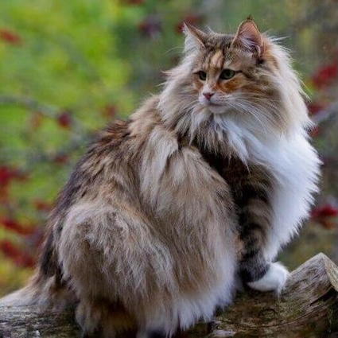

El Gato Bosque de Noruega es originario de los bosques noruegos y se caracteriza por su pelaje denso y resistente al frío. Es un gato activo, inteligente y curioso, que disfruta trepando y explorando. A pesar de su apariencia salvaje, es cariñoso con su familia y se adapta bien a la vida doméstica.